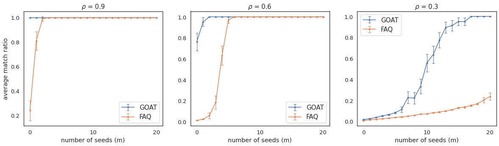

SGM figure 2¶
%load_ext autoreload
%autoreload 1
from pkg.gmp import quadratic_assignment
from pkg.gmp import quadratic_assignment_ot
import numpy as np
%load_ext autoreload
%autoreload 1
import sys
sys.path
sys.path.insert(0,'../../graspologic')
The autoreload extension is already loaded. To reload it, use:
%reload_ext autoreload
Caption:¶
Average match ratio \(\pm\) 2 s.e. as a function of number of seeds \(m\) for differenct correlation values \(\rho\) in \(\rho\)-SBM simulations on $n=300 nodes.
from graspologic.simulations import sbm_corr
import random
import sys
from joblib import Parallel, delayed
from scipy.stats import sem
from sklearn.utils import check_random_state
n = 300
m = range(21)
rhos = [0.9, 0.6, 0.3]
ratios = np.zeros((len(m), 11))
error = np.zeros((len(m), 11))
n_per_block = 100
n_blocks = 3
block_members = np.array(n_blocks * [n_per_block])
block_probs = np.array([[0.7, 0.3, 0.4], [0.3, 0.7, 0.3], [0.4, 0.3, 0.7]])
directed = False
loops = False
n_realizations = 100
def match_ratio(perm):
return np.mean(perm == np.arange(len(perm)))
np.random.seed(8888)
for k in range(len(rhos)):
rho = rhos[k]
for i in m:
def run_sim(seed):
A1, A2 = sbm_corr(
block_members, block_probs, rho, directed=directed, loops=loops
)
W1 = np.sort(random.sample(list(range(n)), i))
W1 = W1.astype(int)
partial_match = np.column_stack((W1, W1))
options={'maximize':True,'tol':1e-9,'maxiter':100,'partial_match':partial_match,'shuffle_input':True, 'reg': 100, 'thr':1e-2,}
res = quadratic_assignment_ot(A1,A2,options=options)
return match_ratio(res.col_ind)
rng = check_random_state(k)
seeds = rng.randint(np.iinfo(np.int32).max, size=n_realizations)
# seeds = np.random.choice(int(1e8), size=n_realizations, replace=False)
outs = Parallel(n_jobs=-1)(delayed(run_sim)(seed) for seed in seeds)
ratios[i, k] = np.mean(outs)
error[i,k] = sem(outs)
from graspologic.simulations import sbm_corr
import random
import sys
from joblib import Parallel, delayed
from scipy.stats import sem
from sklearn.utils import check_random_state
n = 300
m = range(21)
# rhos = 0.1 * np.arange(11)[3:]
rhos = [0.9, 0.6, 0.3]
ratios2 = np.zeros((len(m), 11))
error2 = np.zeros((len(m), 11))
n_per_block = 100
n_blocks = 3
block_members = np.array(n_blocks * [n_per_block])
block_probs = np.array([[0.7, 0.3, 0.4], [0.3, 0.7, 0.3], [0.4, 0.3, 0.7]])
directed = False
loops = False
n_realizations = 100
def match_ratio(perm):
return np.mean(perm == np.arange(len(perm)))
np.random.seed(8888)
for k in range(len(rhos)):
rho = rhos[k]
for i in m:
def run_sim(seed):
A1, A2 = sbm_corr(
block_members, block_probs, rho, directed=directed, loops=loops
)
W1 = np.sort(random.sample(list(range(n)), i))
W1 = W1.astype(int)
partial_match = np.column_stack((W1, W1))
options={'maximize':True,'tol':1e-9,'maxiter':100,'partial_match':partial_match,'shuffle_input':True, 'rng':seed}
res = quadratic_assignment(A1,A2,options=options)
return match_ratio(res.col_ind)
rng = check_random_state(k)
seeds = rng.randint(np.iinfo(np.int32).max, size=n_realizations)
# seeds = np.random.choice(int(1e8), size=n_realizations, replace=False)
outs = Parallel(n_jobs=-1)(delayed(run_sim)(seed) for seed in seeds)
ratios2[i, k] = np.mean(outs)
error2[i,k] = sem(outs)
# -2
sns.set_context('poster')
sns.set(rc={'figure.figsize':(13,11)})
sns.set(font_scale = 2)
sns.set_style('white')
i = 0
plt.errorbar(m,ratios[:, i], 2*error[:, i],fmt='-o',capsize=3, elinewidth=1, markeredgewidth=1, label='GOAT')
plt.errorbar(m,ratios2[:, i], 2*error2[:, i],fmt='-o',capsize=3, elinewidth=1, markeredgewidth=1, label='FAQ')
plt.legend()
plt.xlabel("number of seeds (m)")
plt.ylabel("average match ratio")
plt.title(fr'$\rho$ = {rhos[i]}')
Text(0.5, 1.0, '$\\rho$ = 0.9')

i = 1
sns.set(font_scale = 2)
sns.set_style('white')
plt.errorbar(m,ratios[:, i], 2*error[:, i],fmt='-o',capsize=3, elinewidth=1, markeredgewidth=1, label='GOAT')
plt.errorbar(m,ratios2[:, i], 2*error2[:, i],fmt='-o',capsize=3, elinewidth=1, markeredgewidth=1, label='FAQ')
plt.legend()
plt.xlabel("number of seeds (m)")
plt.ylabel("average match ratio")
plt.title(fr'$\rho$ = {np.around(rhos[i],2)}')
Text(0.5, 1.0, '$\\rho$ = 0.6')
i =2
# sns.set_context('poster')
# sns.set(font_scale = 2)
# sns.set(rc={'figure.figsize':(12,9)})
# sns.set_style('white')
plt.errorbar(m,ratios[:, i], 2*error[:, i],fmt='-o',capsize=3, elinewidth=1, markeredgewidth=1, label='GOAT')
plt.errorbar(m,ratios2[:, i], 2*error2[:, i],fmt='-o',capsize=3, elinewidth=1, markeredgewidth=1, label='FAQ')
plt.legend()
plt.xlabel("number of seeds (m)")
plt.ylabel("average match ratio")
plt.title(fr'$\rho$ = {np.around(rhos[i],2)}')
Text(0.5, 1.0, '$\\rho$ = 0.3')
# sns.set(rc={'figure.figsize':(5,9)})
sns.set(font_scale = 1.2)
sns.set_style('white')
fig, axes = plt.subplots(1, 3, figsize=(20, 5))
axes[0].set_ylabel("average match ratio")
for i in range(3):
sns.set(font_scale = 2)
sns.set_style('white')
axes[i].errorbar(m,ratios[:, i], 2*error[:, i], fmt='.-',capsize=3, elinewidth=1, markeredgewidth=1, label='GOAT')
axes[i].errorbar(m,ratios2[:, i], 2*error2[:, i],fmt='.-',capsize=3, elinewidth=1, markeredgewidth=1, label='FAQ')
axes[i].legend(prop={'size': 15})
axes[i].set_title(fr'$\rho$ = {np.around(rhos[i],2)}', fontsize=15)
axes[i].set_xlabel("number of seeds (m)")
plt.savefig('sgm.png')
